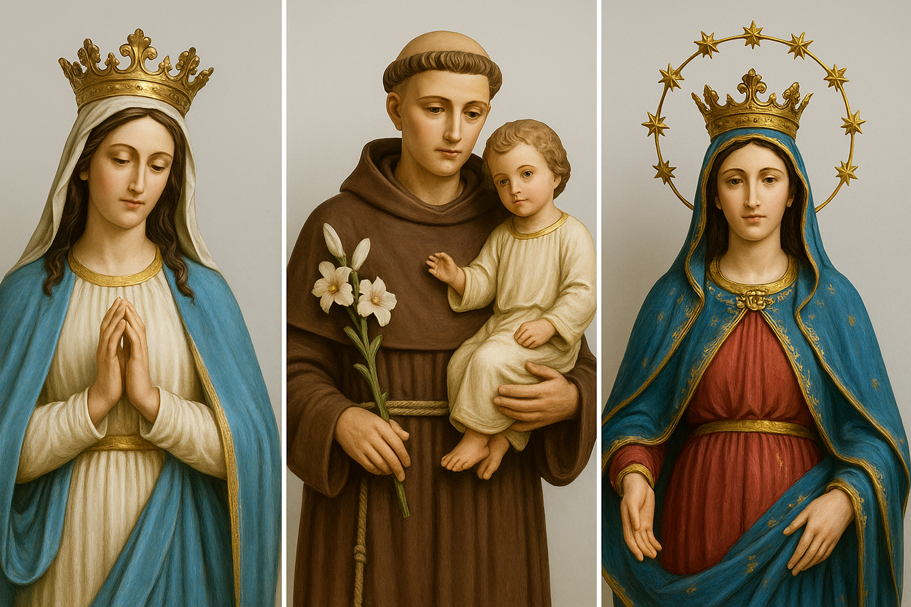

Tradições
São João

O São João em José Gonçalves é um dos momentos mais esperados do ano, quando a comunidade se reúne para celebrar suas tradições, renovar laços e manter viva a essência da cultura nordestina. A festa junina, que acontece entre os dias 22 e 24 de junho, transforma o distrito em um verdadeiro cenário de alegria e acolhimento, atraindo não apenas os moradores locais, mas também famílias e conterrâneos que vivem em outras cidades — especialmente em São Paulo — e que fazem questão de retornar à terra natal para reviver o clima junino característico da região.
Durante o período da festa, a praça principal e as ruas do distrito se enchem de cores, sons e aromas. As casas são enfeitadas com bandeirolas, balões e luzes, enquanto o som do forró pé-de-serra embala a noite e convida todos para dançar. A tradição se mantém viva com apresentações de sanfoneiros, zabumbeiros e trianglistas, que animam o público até altas horas da madrugada. É uma celebração que vai além da música — representa a união de gerações e o orgulho de pertencer a José Gonçalves.
As comidas típicas também são um dos grandes atrativos: milho assado, pamonha, canjica, bolo de fubá, amendoim cozido e licor são servidos de casa em casa, criando um ambiente de partilha e amizade. A fogueira, acesa no centro das comemorações, é símbolo de fé e tradição — ao redor dela, crianças, jovens e adultos se reúnem para conversar, cantar e celebrar a cultura do interior baiano.
O São João em José Gonçalves preserva o espírito comunitário e a simplicidade das festas de antigamente. Sem grandes estruturas ou quermesses formais, o que dá vida ao evento é a própria comunidade, que se organiza espontaneamente para fazer o forró acontecer. Cada família, cada grupo de amigos contribui com um pouco — seja na música, na decoração, na comida ou apenas com a alegria de participar.
Mais do que uma festa, o São João no distrito é uma expressão de identidade e pertencimento. É o reencontro de quem partiu com as suas raízes, o orgulho de uma cultura que resiste ao tempo e o testemunho de que, em José Gonçalves, o calor da fogueira e o som do forró continuam iluminando corações e histórias.
Folia de reis

A fé e a tradição caminham lado a lado em José Gonçalves, e entre as manifestações culturais mais marcantes do distrito estão as Folias de Reis e de São Sebastião, celebrações que unem religiosidade, música e identidade popular. Mantidas há décadas por famílias e devotos locais, essas festas representam não apenas a devoção cristã, mas também o orgulho de uma comunidade que preserva suas raízes e repassa seus costumes de geração em geração.
A Folia de Reis das Mulheres, liderada por Dona Doza, é um exemplo único dessa herança viva. Realizada anualmente no período do ciclo natalino, ela se destaca por ser composta inteiramente por mulheres — algo raro nas tradições de Folia, tradicionalmente formadas por homens. Com seus instrumentos simples, fitas coloridas e versos cantados, as foliãs percorrem casas e comunidades do distrito levando a bandeira dos Santos Reis, pedindo bênçãos e repartindo alegria. Essa tradição feminina, conduzida com devoção e entusiasmo por Dona Doza, simboliza a força e o papel das mulheres na preservação da fé e da cultura popular de José Gonçalves. Mesmo com o passar dos anos, a folia se mantém firme, resistindo ao tempo e às mudanças, mantendo viva a chama da religiosidade no coração da comunidade.
Já a Folia de São Sebastião, conduzida por Zinho, é outra expressão profunda da fé do povo gonçalvense. Realizada tradicionalmente em janeiro, período dedicado ao santo protetor contra doenças e calamidades, a folia percorre o distrito e povoados vizinhos levando cânticos, orações e agradecimentos. A cada parada, o grupo é recebido com devoção, orações e partilhas, e a bandeira de São Sebastião é saudada com respeito e emoção. Zinho, à frente da folia há muitos anos, mantém viva uma tradição que transcende o religioso — é também um gesto de união entre vizinhos, um elo entre as gerações e uma homenagem à simplicidade do povo do campo.
Essas duas expressões da fé popular revelam muito sobre o espírito de José Gonçalves: um povo que canta, reza e festeja junto, que transforma a crença em cultura e o encontro em memória. A cada canto, a cada bandeira erguida, a história do distrito se reafirma — feita de fé, tradição e comunidade, passando de mãos e vozes que nunca deixaram o tambor silenciar.
Devoção a imaculada Conceição, Santo Antônio e Nossa senhora d'ajuda

Em José Gonçalves, a fé tem um lugar especial no coração de cada morador. Entre as devoções mais fortes do distrito estão as celebrações dedicadas a Nossa Senhora da Conceição, Santo Antônio e Nossa Senhora d’Ajuda, que reúnem a comunidade em momentos de oração, gratidão e esperança.
Missa de Nossa Senhora da Conceição acontece no mês de dezembro e marca um dos períodos mais esperados do calendário religioso. É uma celebração cheia de fé e emoção, em que os fiéis se reúnem para agradecer pelas graças recebidas e pedir proteção para o novo ano que se aproxima. As orações e cânticos dedicados à padroeira reforçam o amor e a devoção mariana presentes no povo gonçalvense.
Já a Missa de Santo Antônio é celebrada no mês de junho, e costuma reunir muitos devotos do santo conhecido como protetor dos casais e intercessor das causas impossíveis. É um momento de muita alegria, acompanhado de orações, ladainhas e, muitas vezes, de bênçãos especiais para os fiéis e para os pães de Santo Antônio, símbolo da partilha e da fé.
A Missa de Nossa Senhora d’Ajuda também tem grande importância espiritual para os moradores. Realizada com simplicidade e devoção, a celebração costuma acontecer entre agosto e setembro, período em que os fiéis se reúnem para louvar a mãe protetora que, segundo a tradição popular, está sempre pronta a amparar quem mais precisa. A festa é marcada por cânticos suaves, flores e velas, que embelezam o altar e renovam o sentimento de fé e união.
Essas três celebrações mantêm viva a espiritualidade do distrito, reforçando o valor das tradições religiosas que atravessam gerações. Cada missa é mais do que um ato de fé — é um encontro de comunidade, esperança e gratidão que faz de José Gonçalves um lugar onde o sagrado está sempre presente na vida cotidiana.